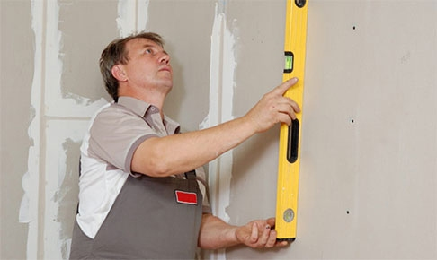

ВЫРАВНИВАНИЕ СТЕН
Выравнивание стен необходимо для восстановления правильной геометрии помещения. К сожалению, нередко стены в квартирах имеют множество дефектов – выпуклости, неровности лишь малая их часть, порой поверхность стены характеризуется значительными погрешностями углов наклона, делая ремонт квартиры под ключ это следует учитывать.
Выравнивание стен своими руками может быть произведено двумя способами: штукатуркой по маякам и гипсокартонными листами. Чтобы осуществить выравнивание стен своими руками при помощи штукатурки, позаботьтесь о наличии следующих инструментов: кисти, ватерпаса, мастерка, шпателя, правила, зубчатого шпателя, терки, ведра (для замешивания раствора), перчаток, рулетки и дрели со специальной насадкой (для приготовления смеси).
Выравнивание стен штукатуркой по маякам начинается с непосредственной подготовки поверхности стены – это зачищение от следов старой краски, отслоений, пыли, грязи, масляных пятен и тому подобных загрязнений. Крупные выступы и шероховатости устраняются, затем на стену из бетона зубилом наносятся насечки – делается это для более прочного сцепления слоя штукатурки со стеной. На деревянную стену с этой же целью набивается дранка (деревянные узкие рейки). После чего стена грунтуется. Грунтовка должна быть подобрана с учетом специфики поверхности. Грунтовать поверхность нужно обязательно – иначе велик риск того, что со временем штукатурка осыплется, а на финишном слое появятся трещины или пятна.
Далее выравнивание стен штукатуркой подразумевает приготовление смеси. Аккуратно разбавляем штукатурку водой – смесь при этом не должна быть слишком жидкой. Чтобы проверить, правильная ли достигнута консистенция, раствора, проведите по нему шпателем – на растворе должно образоваться углубление, не подверженное растеканию.
Поскольку мы говорим о таком процессе, как выравнивание стен по маякам – следующим этапом в ремонте следует установка маячков. Маячные профили крепятся на стену, регулируясь высотой потолка. Их вертикальность проверяется водяным уровнем. Затем в отверстиях маяков размещаются гвозди, по ним натягиваются шнуры сверху и снизу. Таких маячных профилей устанавливается несколько штук. Выступы профилей должны находиться на одном уровне с натянутыми шнурами. После затвердевания раствора удаляются гвозди и шнуры, и начинается оштукатуривание. Штукатурная смесь наносится толщиной от 5 до 20 мм (намазывается шпателем, разравнивается правилом). Спустя примерно час поверхность стены выравнивается широким металлическим шпателем – это позволяет заполнить углубления и срезать лишний раствор. Маячки удаляются на следующем этапе – с помощью мастерка, образовавшееся пространство также заполняется раствором. После высыхания поверхность опять грунтуется.
Выравнивание стен гипсокартоном
Еще один способ – выравнивание стен гипсокартоном, его еще называют «сухим выравниванием». Для него предварительная подготовка стен не требуется. Сначала на стену наносится разметка для крепления направляющих профилей (на полу очерчивается горизонтальная линия, затем она переносится при помощи отвеса на потолок). При помощи дюбеля крепятся направляющие – с шагом 80–100 см. Затем отмечаются точки для укрепления несущих профилей – в этом поможет отвес. Наносим вдоль него риски, шаг примерно полметра. В получившиеся точки ставим крепления и монтируем несущие профили (обычно их длина составляет 3 или 4 метра). На подготовленный таким образом каркас крепятся листы гипсокартона при помощи саморезов. Предварительно нужно заполнить пространство между листами и стеной тепло- или звукоизоляцией, различными коммуникациями. Чтобы гипсокартон крепился надежно, рекомендуется оставлять не менее 1 см от края листа и не превышать 30 см расстояния между саморезами. Их шляпки утапливаем приблизительно на 1мм в лист. Выравнивание стен гипсокартоном заканчивается заделкой стыков и швов между листами. Предварительно стыки проклеиваются малярной сеткой, после чего шпаклюются.